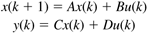
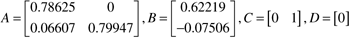
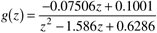
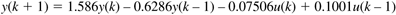
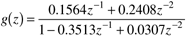

| [ Team LiB ] |
|
M4.2 Forming Discrete-Time ModelsThe formation of discrete-time models is the same as for continuous-time models, except that a sample time should also be specified. This sample time is simply the next argument in the function call statement, sys = ss(a,b,c,d,Ts) % discrete state space sys = tf(num,den,Ts) % discrete transfer function sys = zpk(z,p,k,Ts) % discrete zero-pole-gain where Ts is the sample time. Discrete State Space ModelsA discrete-time state space model has the form  where k represents the discrete-time step index. Consider the discrete state space model  with a sample time of Dt = 0.1 minutes. Please note that, if you need to convert a continuous state space model to discrete, see Section M4.3. After the a, b, c and d matrices are entered, the state space object can be created:
» vdv_ssd = ss(a,b,c,d,0.1)
a =
x1 x2
x1 0.78625 0
x2 0.06607 0.79947
b =
u1
x1 0.62219
x2 -0.07506
c =
x1 x2
y1 0 1
d =
u1
y1 0
Sampling time: 0.1
Discrete-time system.
If you have a discrete-time model but do not know the sample time, enter –1 for Ts.
»vdv_ssd1 = ss(a,b,c,d,-1)
a =
x1 x2
x1 0.78625 0
x2 0.06607 0.79947
b =
u1
x1 0.62219
x2 -0.07506
c =
x1 x2
y1 0 1
d =
u1
y1 0
Sampling time: unspecified
Discrete-time system.
The poles and zeros are found using the same commands as for continuous systems.
» pole(vdv_ssd)
ans =
0.7995
0.7863
» tzero(vdv_ssd)
ans =
1.3339
The poles are inside the unit circle, indicating stability. The zero is outside the unit circle, indicating that the model inverse is unstable. Discrete Transfer FunctionThe discrete transfer function model is  which represents the following input-output model  The transfer function object is created
» vdv_tfd = tf([-0.07506 0.1001],[1 -1.586 0.6286],0.1)
Transfer function:
-0.07506 z + 0.1001
----------------------
z^2 - 1.586 z + 0.6286
Sampling time: 0.1
» pole(vdv_tfd)
ans =
0.7995
0.7863
» tzero(vdv_tfd)
ans =
1.3339
Again, the poles are inside the unit circle, indicating stability. The zero is outside the unit circle, indicating that the model inverse is unstable. Discrete Filter FormIt is common to use the backward shift notation for discrete chemical process models. There is an additional Control Toolbox LTI object specifically for this. sys = filt(num,den,Ts) % discrete transfer function, z^-1 Consider the transfer function in backward shift form:  The MATLAB command and results are » vdv_ff = filt([0 0.1564 0.2408],[1 -0.3513 0.0307],0.1) Transfer function: 0.1564 z^-1 + 0.2408 z^-2 ----------------------------- 1 - 0.3513 z^-1 + 0.0307 z^-2 Sampling time: 0.1 Note that with the discrete filter form, it is critical to have the leading zero element in the numerator polynomial. Converting Between Discrete Model TypesA model in any one of the standard discrete forms can easily be converted to another standard discrete form. Converting from State Space Form to Transfer Function FormAs an example, assume that the discrete state space form has been entered as vdv_ssd. The discrete transfer function is found using tf: » vdv_tfd1 = tf(vdv_ssd) Transfer function: -0.07506 z + 0.1001 ---------------------- z^2 - 1.586 z + 0.6286 Sampling time: 0.1 |
| [ Team LiB ] |
|